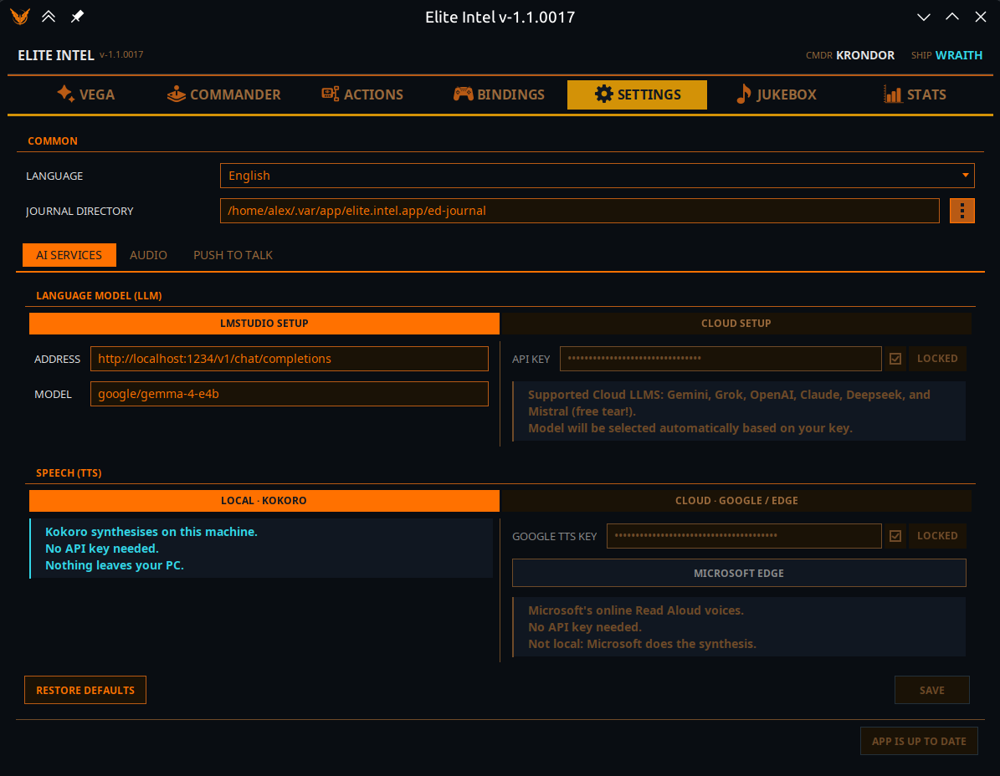
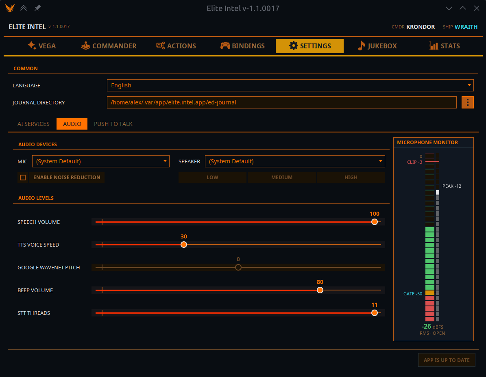
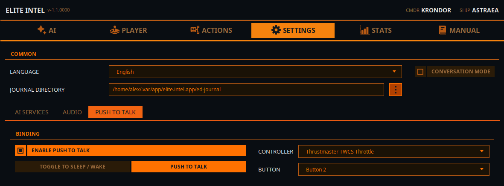
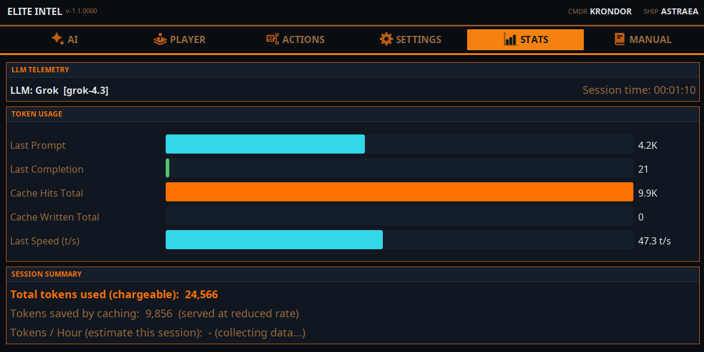

Настройки / Вкладка локального LLM
Настройки / Вкладка локального LLM

Язык
- Выберите язык. Поддерживаются: английский, испанский, французский, немецкий, украинский и русский.
Режим разговора (вкл/выкл)
- «Режим разговора» позволяет вести чат с LLM. В отключённом состоянии (по умолчанию) LLM работает в строгом командном режиме: он только распознаёт команды, выполняет запросы и действия, игнорируя весь бессмысленный ввод.
Каталог журналов
- Расположение каталога игрового журнала. Именно так Elite Intel узнаёт о вашей игровой сессии.
Параметры LLM
Локальный LLM
- Выберите хост механизма инференса: Ollama или LMStudio (более быстрый вариант)
- В поле ADDRESS введите адрес вашего сервера инференса localhost, если он работает на том же компьютере, или IP-адрес компьютера в локальной сети. Укажите номер порта и URI конечной точки API
- В поле Command Model введите название модели. Эта модель будет использоваться для классификации пользовательского ввода
- В поле Query Model введите название модели. Эта модель будет использоваться для запросов и ответов на естественном языке
- ПРИМЕЧАНИЕ: Можно использовать одну и ту же модель для обоих полей особенно если ваше оборудование не позволяет запускать более одной модели одновременно
Облачный LLM
Если у вас нет оборудования для запуска локального LLM, можно использовать облачный вариант.
- Mistral Console предлагает бесплатный уровень и прост в настройке
- Альтернативно можно использовать Claude, Gemini, Grok (xAI), Open AI или DeepSeek. Войдите в консоль API своего провайдера LLM и создайте ключ API.
- Введите ключ в поле API key, заблокируйте поле и нажмите «use», чтобы сообщить приложению об использовании облачного LLM.
- Перезапустите службы на главной вкладке для применения изменений.
ПРИМЕЧАНИЕ 👉 Подробнее об облачных LLM 👈
 Настройки / Аудио
Настройки / Аудио
Настройте параметры аудио

Выпадающие списки Микрофон и Динамики позволяют выбрать линии ввода и вывода аудио. Изменение вступает в силу после перезапуска служб на главной вкладке.
Speech Volume: Управляет громкостью синтеза речи.
TTS Voice Speed: Управляет скоростью синтеза речи.
Beep Volume: Управляет громкостью звукового индикатора. Указывает, что STT завершил обработку и LLM получил ввод.
STT Threads: Задаёт выделение потоков для обработки STT. Это настройка минимума/максимума. Приложение запрашивает минимум, но использует столько, сколько предоставляет процессор. Потоки освобождаются после завершения обработки.
Microphone Monitor
Уровень FLOOR (уровень шума, когда вы не говорите),
Уровень GATE уровень аудиошлюза. Когда звук выше шлюза, данные отправляются в Parakeet для транскрипции. Когда уровень падает ниже шлюза, принятый звук транскрибируется в текст и отправляется в LLM для классификации
CLIP указывает, что вы перегружаете микрофон, если ввод превышает эту линию. В этом случае транскрипция будет неточной.
 Настройки / Push To Talk
Настройки / Push To Talk

Настройка PTT (Push To Talk)
Push To Talk работает только с геймпадом, а не с клавиатурой. Да, придётся пожертвовать одной кнопкой на геймпаде, зато вы получаете доступ к более чем 200 командам и запросам.
Настройки PTT имеют два режима.
- Toggle Sleep/Wake Этот вариант просто переключает приложение между режимами сна и бодрствования. В режиме сна приложение будет игнорировать весь голосовой ввод, кроме команды «Wake Up!». Слова обхода «listen» или «listen up» позволяют пройти мимо режима сна. «Listen up!, Lower the landing gear.» сработает.
- PTT Mode В режиме чистого Push To Talk приложение «спит», игнорируя весь ввод. Когда кнопка PTT на геймпаде нажата и удерживается, раздастся звуковой сигнал произнесите команду или запрос и отпустите кнопку. Ещё один сигнал укажет, что ввод обрабатывается.
Настройки / Статистика

На вкладке статистики отображается потребление токенов. Токены базовые единицы вычислений LLM. Один токен это одно слово или число.
Интеграция облачных моделей оптимизирована под каждого провайдера для максимального кэширования токенов. Кэшированные токены либо бесплатны, либо тарифицируются по сниженной ставке это зависит от провайдера. В среднем приложение использует около 250 тысяч токенов в час. Некоторые облачные провайдеры кэшируют до 80% из них, другие около 40%. Зависит от выбранного облака.
Оценка будет показана на основе вашего использования после более чем 15 минут работы сессии. Расчёт приблизительный.
Локальный LLM не отображает кэшированные токены эта информация для него не актуальна.